library(palmerpenguins)
penguins |>
select(flipper_length_mm, body_mass_g) |>
cov() flipper_length_mm body_mass_g
flipper_length_mm NA NA
body_mass_g NA NAPSYC 6019-A01 / PSYC 6022-A01
2026-11-13 | Lab 12
Correlation
Scatterplots
Scatterplot matrices
Simple regression
So far, we’ve been talking about continuous outcomes as predicted by different categorical variables.
But the world is not limited to categorical predictors!
Today, we are going to talk about estimating associations between two continuous variables by examining their correlation.
Correlation is a measure of the linear association between two continuous variables.
Is a standardized version of covariance.
Covariance is an unstandardized index of the linear relationship between two continuous variables.
\[ s_{xy} = \frac{\sum_{i = 1}^N (x_i - \bar{x}) (y_i - \bar{y}) }{N - 1} \]
○ \(x_i\): an observation of \(x\)
○ \(\bar{x}\): sample mean of \(x\)
○ \(y_i\): an observation of \(y\)
○ \(\bar{y}\): sample mean of \(y\)
○ \(N\): sample size
The deviations of each \(x_i\) from its mean and the deviations of each \(y_i\) from its mean, multiplied together, summed up, and divided by the sample size minus one.
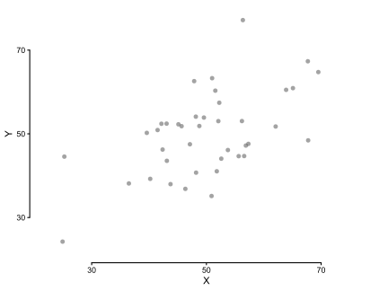
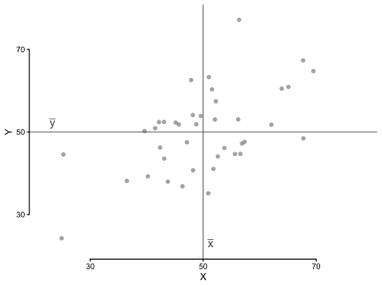
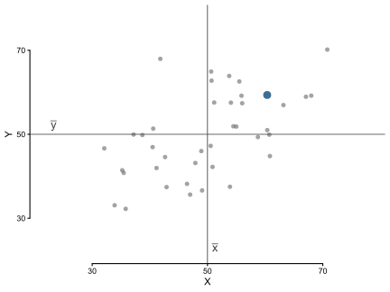
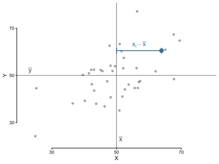
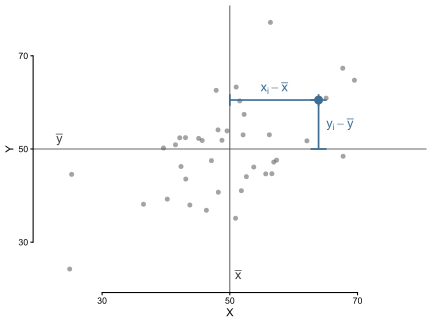
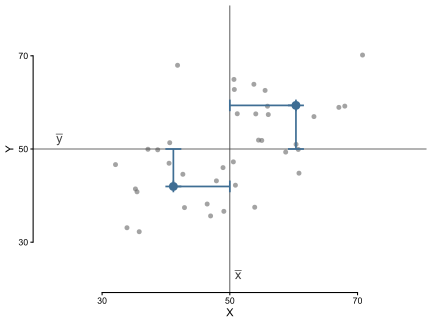
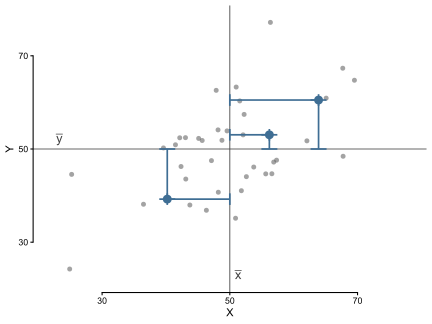
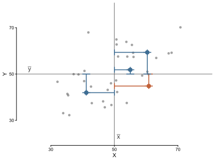
Examples of positive, zero, and negative covariance:
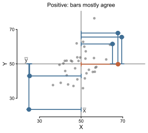
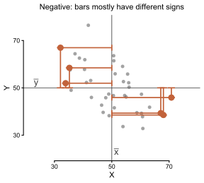
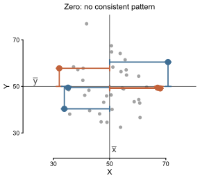
It’s tricky to numerically interpret a covariance, because it is in a combination of x and y’s units. Correlation standardizes covariance down to a single scale.
\[ r_{xy} = \frac{s_{xy}}{s_{x} s_{y}} \]
○ \(s_{xy}\): covariance between \(x\) and \(y\)
○ \(s_x\): sample standard deviation of \(x\)
○ \(s_y\): sample standard deviation of \(y\)
We standardize covariance into correlation just by dividing by the two variables’ standard deviations!
It’s tricky to numerically interpret a covariance, because it is in a combination of x and y’s units. Correlation standardizes covariance down to a single scale.
\[ r_{xy} = \frac{s_{xy}}{s_{x} s_{y}} = \frac{\sum_{i = 1}^N (x_i - \bar{x}) (y_i - \bar{y}) }{\sqrt{\sum_{i = 1}^N (x_i - \bar{x})^2} \sqrt{\sum_{i = 1}^N (y_i - \bar{y})^2}}\] Bounded from \([-1, \ 1]\)
○ \(r_{xy} = -1\): strong negative correlation (when \(x\) increases, \(y\) tends to decrease)
○ \(r_{xy} = 0\): no correlation (\(x\) increasing doesn’t provide information about \(y\))
○ \(r_{xy} = 1\): strong positive correlation (when \(x\) increases, \(y\) tends to increase)
cov(x, y = NULL, use = "everything", method = "pearson")
○ x = numeric vector or dataframe
○ y = if x is a numeric vector, can specify y as a numeric vector
○ use = how to handle missing (NA) values
○ method = which type of coefficient to compute
Need to select() down just to variables of interest.
library(palmerpenguins)
penguins |>
select(flipper_length_mm, body_mass_g) |>
cov() flipper_length_mm body_mass_g
flipper_length_mm NA NA
body_mass_g NA NApenguins |>
select(flipper_length_mm, body_mass_g) |>
cov(use = "complete.obs") flipper_length_mm body_mass_g
flipper_length_mm 197.7318 9824.416
body_mass_g 9824.4161 643131.077cor(x, y = NULL, use = "everything", method = "pearson")
○ x = numeric vector or dataframe
○ y = if x is a numeric vector, can specify y as a numeric vector
○ use = how to handle missing (NA) values
○ method = which type of coefficient to compute
penguins |>
select(flipper_length_mm, body_mass_g) |>
cor() flipper_length_mm body_mass_g
flipper_length_mm 1 NA
body_mass_g NA 1penguins |>
select(flipper_length_mm, body_mass_g) |>
cor(use = "complete.obs") flipper_length_mm body_mass_g
flipper_length_mm 1.0000000 0.8712018
body_mass_g 0.8712018 1.0000000NAscov() and cor() have different options for what to do if missing values (NAs) are present
○ "everything" = use all values: if one is NA, result will be NA
○ "all.obs" = use all values: if one is NA throw an error
○ "complete.obs" = delete rows with any NA values at all: if no rows remaining, throw an error
○ "na.or.complete" = delete rows with any NA values at all: if no rows remaining, result will be NA
○ "pairwise.complete.obs" = for each pair of variables, delete rows if either of the pairs is NA: may result in correlations being computed on different sample sizes
NAspenguins |>
select(flipper_length_mm, body_mass_g) |>
cor(use = "everything") flipper_length_mm body_mass_g
flipper_length_mm 1 NA
body_mass_g NA 1penguins |>
select(flipper_length_mm, body_mass_g) |>
cor(use = "all.obs")Error in `cor()`:
! missing observations in cov/corpenguins |>
select(flipper_length_mm, body_mass_g) |>
cor(use = "complete.obs") flipper_length_mm body_mass_g
flipper_length_mm 1.0000000 0.8712018
body_mass_g 0.8712018 1.0000000penguins |>
select(flipper_length_mm, body_mass_g) |>
cor(use = "na.or.complete") flipper_length_mm body_mass_g
flipper_length_mm 1.0000000 0.8712018
body_mass_g 0.8712018 1.0000000penguins |>
select(flipper_length_mm, body_mass_g) |>
cor(use = "pairwise.complete.obs") flipper_length_mm body_mass_g
flipper_length_mm 1.0000000 0.8712018
body_mass_g 0.8712018 1.0000000# install.packages("rstatix")
penguins |>
select(flipper_length_mm, body_mass_g) |>
rstatix::cor_test()# A tibble: 1 × 9
var1 var2 cor statistic df p conf.low conf.high method
<chr> <chr> <dbl> <dbl> <int> <dbl> <dbl> <dbl> <chr>
1 flipper_lengt… body… 0.87 32.7 340 4.37e-107 0.843 0.895 Pears…penguins_ordinal <- penguins |>
mutate(
across(
c(bill_length_mm, bill_depth_mm),
function(bill_column) case_when(
bill_column < quantile(bill_column, .33, na.rm = T) ~ "low",
between(
bill_column,
quantile(bill_column, 1/3, na.rm = T),
quantile(bill_column, 2/3, na.rm = T)
) ~ "med",
bill_column > quantile(bill_column, .66, na.rm = T) ~ "high"
) |>
factor(levels = c("low", "med", "high"), ordered = TRUE),
.names = "{.col}_ordinal"
)
) |>
select(ends_with("_ordinal"))
head(penguins_ordinal)# A tibble: 6 × 2
bill_length_mm_ordinal bill_depth_mm_ordinal
<ord> <ord>
1 low high
2 low med
3 low med
4 <NA> <NA>
5 low high
6 low high penguins_ordinal |>
count(bill_length_mm_ordinal, bill_depth_mm_ordinal)# A tibble: 10 × 3
bill_length_mm_ordinal bill_depth_mm_ordinal n
<ord> <ord> <int>
1 low low 5
2 low med 59
3 low high 49
4 med low 53
5 med med 30
6 med high 32
7 high low 55
8 high med 28
9 high high 31
10 <NA> <NA> 2penguins_ordinal |>
mutate(across(everything(), as.numeric)) |>
cor(use = "complete.obs",
method = "spearman") bill_length_mm_ordinal bill_depth_mm_ordinal
bill_length_mm_ordinal 1.0000000 -0.3009783
bill_depth_mm_ordinal -0.3009783 1.0000000penguins_ordinal |>
mutate(across(everything(), as.numeric)) |>
cor(use = "complete.obs",
method = "kendall") bill_length_mm_ordinal bill_depth_mm_ordinal
bill_length_mm_ordinal 1.0000000 -0.2676226
bill_depth_mm_ordinal -0.2676226 1.0000000If there are lots of datapoints, may want to take down the alpha for clearer results.
E.g., with the tidyverse diamonds dataset.

diamonds |>
ggplot(aes(x = carat, y = price)) +
geom_point(alpha = 0.025, shape = 16, size = 2) +
labs(y = "Price", x = "Carat") +
scale_y_continuous(labels = scales::label_currency()) +
guides(x = guide_axis(cap = T),
y = guide_axis(cap = T)) +
theme_classic()
r <- cor(penguins$flipper_length_mm, penguins$body_mass_g, use = "complete.obs")
penguins |>
ggplot(aes(x = flipper_length_mm, y = body_mass_g)) +
geom_point() +
annotate(geom = "text", label = round(r, 2), x = mean(penguins$flipper_length_mm, na.rm = T),
y = max(penguins$body_mass_g, na.rm = T)) +
labs(y = "Body Mass", x = "Flipper Length") +
guides(x = guide_axis(cap = T),
y = guide_axis(cap = T)) +
theme_classic()r <- cor(penguins$flipper_length_mm, penguins$body_mass_g, use = "complete.obs")
r_label <- paste("italic(r) ==", round(r, 2))
penguins |>
ggplot(aes(x = flipper_length_mm, y = body_mass_g)) +
geom_point() +
annotate(geom = "text", label = r_label, x = mean(penguins$flipper_length_mm, na.rm = T),
y = max(penguins$body_mass_g, na.rm = T), parse = T) +
labs(y = "Body Mass", x = "Flipper Length") +
guides(x = guide_axis(cap = T),
y = guide_axis(cap = T)) +
theme_classic()Adding a regression line.
Defines the relationship between the variables as \(y = mx + b\)
○ \(b\): intercept, \(y\) when \(x = 0\)
○ \(m\): slope, change in \(y\) with unit increase in \(x\)
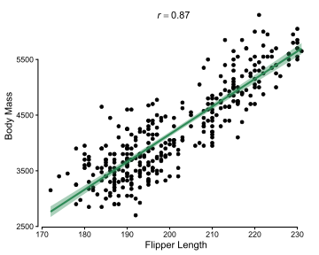
r <- cor(penguins$flipper_length_mm, penguins$body_mass_g, use = "complete.obs")
r_label <- paste("italic(r) ==", round(r, 2))
penguins |>
ggplot(aes(x = flipper_length_mm, y = body_mass_g)) +
geom_point() +
geom_smooth(method = "lm", color = "seagreen", fill = "seagreen") +
annotate(geom = "text", label = r_label, x = mean(penguins$flipper_length_mm, na.rm = T),
y = max(penguins$body_mass_g, na.rm = T), parse = T) +
labs(y = "Body Mass", x = "Flipper Length") +
guides(x = guide_axis(cap = T),
y = guide_axis(cap = T)) +
theme_classic()::::
::::
Adding a LOESS line…
::::
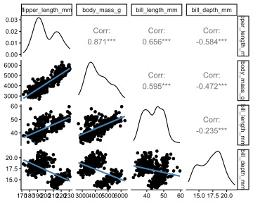
custom_trendline <- function(data, mapping, ...) {
ggplot(data = data, mapping = mapping) +
geom_point(...) +
geom_smooth(method = "lm", se = FALSE, color = "steelblue")
}
penguins |>
select(flipper_length_mm, body_mass_g, bill_length_mm, bill_depth_mm) |>
GGally::ggpairs(lower = list(continuous = custom_trendline)) +
theme_classic()::::
When we added trendlines (method = "lm") onto our scatterplots, we were performing a regression.
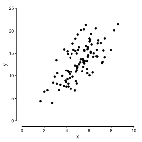
set.seed(1)
tibble(
x = rnorm(100, 5, 1.5),
y = 3 + 2 * x + rnorm(100, 0, 3)
) |>
ggplot(aes(x = x, y = y)) +
geom_point() +
scale_x_continuous(breaks = seq(0, 10, by = 2), limits = c(0, 10)) +
scale_y_continuous(breaks = seq(0, 25, by = 5), limits = c(0, 25)) +
guides(x = guide_axis(cap = T),
y = guide_axis(cap = T)) +
theme_classic()We are representing the relationship between the variables as \(y = mx + b\).
○ \(b\): intercept, \(y\) when \(x = 0\)
○ \(m\): slope, change in \(y\) with unit increase in \(x\)
When we added trendlines (method = "lm") onto our scatterplots, we were performing a regression.
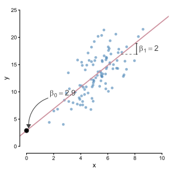
set.seed(1)
d <- tibble(
x = rnorm(100, 5, 1.5),
y = 3 + 2 * x + rnorm(100, 0, 3)
)
fit <- lm(y ~ x, data = d)
b0 <- coef(fit)[[1]]
b1 <- coef(fit)[[2]]
grey <- "grey25"
arr <- arrow(length = unit(0.09, "inches"), type = "closed")
# One-unit run (x = 8 to 9) and the corresponding rise
x0 <- 7
x1 <- 8
y0 <- b0 + b1 * x0
y1 <- b0 + b1 * x1
ggplot(d, aes(x = x, y = y)) +
geom_point(alpha = 0.6, shape = 16, size = 1.8, color = "steelblue") +
geom_abline(intercept = b0, slope = b1, color = "pink3", linewidth = 0.8) +
# Intercept: point where the line crosses x = 0, with a curved arrow and label
annotate("point", x = 0, y = b0, color = "black", size = 3) +
annotate("curve", x = 1.6, xend = 0.15, y = b0 + 6, yend = b0 + 0.5,
curvature = 0.35, arrow = arr, color = grey, linewidth = 0.5) +
annotate("text", x = 1.7, y = b0 + 6.8, hjust = 0, color = grey, size = 4.5,
parse = TRUE, label = sprintf("beta[0] == %.2f", b0)) +
# Slope: one-unit run, then the rise over that run
annotate("segment", x = x0, xend = x1, y = y0, yend = y0,
linetype = "dashed", color = grey, linewidth = 0.4) +
geom_errorbar(data = tibble(x = x1 + 0.12, ymin = y0, ymax = y1),
aes(x = x, ymin = ymin, ymax = ymax),
width = 0.15, color = grey, linewidth = 0.6,
inherit.aes = FALSE) +
annotate("text", x = x1 + 0.3, y = (y0 + y1) / 2, hjust = 0, color = grey,
size = 4.5, parse = TRUE, label = sprintf("beta[1] == %.2f", b1)) +
scale_x_continuous(breaks = seq(0, 10, by = 2), limits = c(0, 10)) +
scale_y_continuous(breaks = seq(0, 25, by = 5), limits = c(0, 25)) +
guides(x = guide_axis(cap = TRUE),
y = guide_axis(cap = TRUE)) +
theme_classic()We are representing the relationship between the variables as \(y = mx + b\).
○ \(b\): intercept, \(y\) when \(x = 0\)
○ \(m\): slope, change in \(y\) with unit increase in \(x\)
In modeling, you more often see this as \(y = \beta_0 + \beta_1 x\)
○ General linear model
Let’s regress penguin bill length (\(x\)) on penguin bill depth (\(y\)).
\[\text{bill depth}_i = \beta_0 + \beta_1 \text{bill length}_i + \epsilon_i\]
Call:
lm(formula = bill_depth_mm ~ bill_length_mm, data = penguins)
Residuals:
Min 1Q Median 3Q Max
-4.1381 -1.4263 0.0164 1.3841 4.5255
Coefficients:
Estimate Std. Error t value Pr(>|t|)
(Intercept) 20.88547 0.84388 24.749 < 2e-16 ***
bill_length_mm -0.08502 0.01907 -4.459 1.12e-05 ***
---
Signif. codes: 0 '***' 0.001 '**' 0.01 '*' 0.05 '.' 0.1 ' ' 1
Residual standard error: 1.922 on 340 degrees of freedom
(2 observations deleted due to missingness)
Multiple R-squared: 0.05525, Adjusted R-squared: 0.05247
F-statistic: 19.88 on 1 and 340 DF, p-value: 1.12e-05\(R^2 = \frac{\mathrm{SS}_\mathrm{regression}}{\mathrm{SS}_y} = \frac{\sum(\hat{y}_i - \bar{y})}{\sum(\hat{y}_i- \bar{y})}\)
○ Proportion of variance in \(y\) explained by the model (predicted values \(\hat{y}\))
lm() Objectsbill_model_tidy <- broom::tidy(bill_model)
bill_model_tidy# A tibble: 2 × 5
term estimate std.error statistic p.value
<chr> <dbl> <dbl> <dbl> <dbl>
1 (Intercept) 20.9 0.844 24.7 4.72e-78
2 bill_length_mm -0.0850 0.0191 -4.46 1.12e- 5bill_model |>
gtsummary::tbl_regression(intercept = T)| Characteristic | Beta | 95% CI | p-value |
|---|---|---|---|
| (Intercept) | 21 | 19, 23 | <0.001 |
| bill_length_mm | -0.09 | -0.12, -0.05 | <0.001 |
| Abbreviation: CI = Confidence Interval | |||
Coefficients
coefficients(bill_model) (Intercept) bill_length_mm
20.88546832 -0.08502128 coefficients(bill_model)[1](Intercept)
20.88547 Residual variance
sigma(bill_model)[1] 1.922285summary(bill_model)
Call:
lm(formula = bill_depth_mm ~ bill_length_mm, data = penguins)
Residuals:
Min 1Q Median 3Q Max
-4.1381 -1.4263 0.0164 1.3841 4.5255
Coefficients:
Estimate Std. Error t value Pr(>|t|)
(Intercept) 20.88547 0.84388 24.749 < 2e-16 ***
bill_length_mm -0.08502 0.01907 -4.459 1.12e-05 ***
---
Signif. codes: 0 '***' 0.001 '**' 0.01 '*' 0.05 '.' 0.1 ' ' 1
Residual standard error: 1.922 on 340 degrees of freedom
(2 observations deleted due to missingness)
Multiple R-squared: 0.05525, Adjusted R-squared: 0.05247
F-statistic: 19.88 on 1 and 340 DF, p-value: 1.12e-05Intercept: The expected value of bill depth when bill length is zero is 20.89.
○ Do we even care about bill length being zero? 🤔
Slope: The expected increase in bill depth with a one unit increase in bill length is 20.89.
We can convert the variables to z-scores. Now, \(\text{bill length} = 0\) means the average bill length across penguins.
penguins_cleaned <- penguins |>
mutate(across(c(starts_with("bill_")), scale, .names = "{.col}_z"))
penguins_cleaned |>
select(starts_with("bill_"))# A tibble: 344 × 4
bill_length_mm bill_depth_mm bill_length_mm_z[,1] bill_depth_mm_z[,1]
<dbl> <dbl> <dbl> <dbl>
1 39.1 18.7 -0.883 0.784
2 39.5 17.4 -0.810 0.126
3 40.3 18 -0.663 0.430
4 NA NA NA NA
5 36.7 19.3 -1.32 1.09
6 39.3 20.6 -0.847 1.75
7 38.9 17.8 -0.920 0.329
8 39.2 19.6 -0.865 1.24
9 34.1 18.1 -1.80 0.480
10 42 20.2 -0.352 1.54
# ℹ 334 more rows# A tibble: 2 × 5
term estimate std.error statistic p.value
<chr> <dbl> <dbl> <dbl> <dbl>
1 (Intercept) 0 0.053 0 1
2 bill_length_mm_z -0.235 0.053 -4.46 0cor(
penguins_cleaned$bill_length_mm,
penguins_cleaned$bill_depth_mm,
use = "complete.obs"
)[1] -0.2350529Simple regression slope coefficient is just the correlation!
 {.absolute bottom = 0, right = 0 .fragment fragment-index=1}
{.absolute bottom = 0, right = 0 .fragment fragment-index=1}
More regression!
Visualizing regression predictions
Assumption checking
Regression diagnostics
Confounders